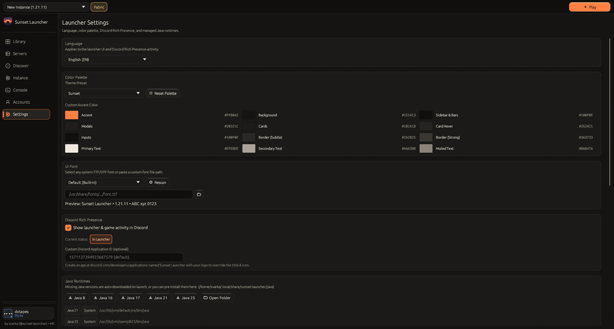

Adoptium
Java и пресеты JVM
Лимиты RAM, собственные флаги, пресеты G1GC, ZGC и Aikar с автоматической загрузкой подходящей версии Adoptium Java.
Все инструменты Sunset Launcher — от экспорта модпаков до живых логов вылетов
Создавайте, дублируйте, настраивайте и удаляйте сборки. Каждая хранится в собственной папке instances/<name> — моды, конфиги и миры разных версий не смешиваются. Переключайтесь между профилями прямо из боковой панели.

Встроенные каталоги Modrinth и CurseForge: ищите и устанавливайте моды, модпаки, ресурспаки и шейдеры, не выходя из лаунчера. Зависимости и совместимость с загрузчиком проверяются автоматически.

Включайте и отключайте отдельные моды без удаления файлов. Для каждого элемента отображаются версия, размер и источник каталога.

Авторизация Microsoft по Device Code, аккаунты Ely.by через authlib-injector и офлайн-профили. Превью скинов кешируются локально, а токены хранятся в системном OS Keyring.

Поток stdout и stderr игры в реальном времени с фильтрацией по уровням лога. При аварийном завершении лаунчер выделяет причину и копирует отчёт одной кнопкой.

Девять языков интерфейса, настраиваемые цветовые темы, командная палитра по Ctrl+K и статус Discord Rich Presence на выбранном языке.

Переведены все разделы приложения, командная палитра и статусы Discord Rich Presence
Adoptium
Лимиты RAM, собственные флаги, пресеты G1GC, ZGC и Aikar с автоматической загрузкой подходящей версии Adoptium Java.
Rust + egui
Один скомпилированный бинарник без движка Chromium и фоновых процессов Electron.
Вход сразу в сохранение через Quick Play и создание .zip-архивов миров в один клик.
Получение релизов из GitHub Releases со сверкой контрольной суммы SHA-256 перед установкой.
Никакой аналитики и трекеров. Ключи авторизации хранятся локально в системном Keyring.
Ярлык .desktop в Linux, меню «Пуск» в Windows и блокировка повторного запуска через сокет.
Бесплатный open-source лаунчер под лицензией MIT для Windows, Linux и macOS